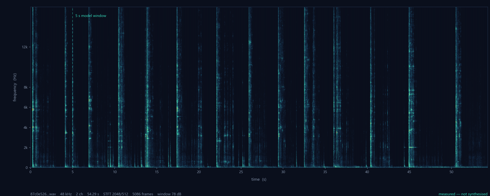
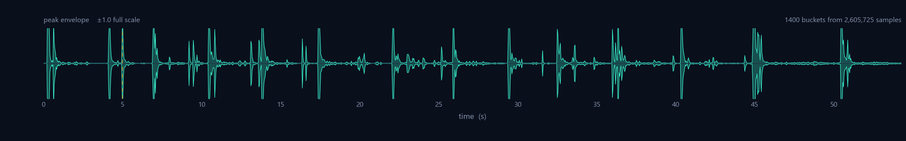
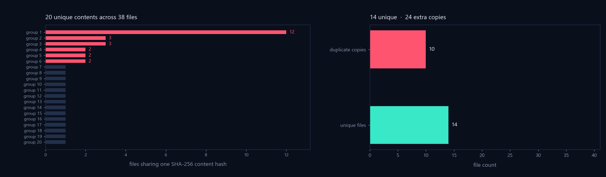

Listen,
classify,
alert.
SonicSentinel AI classifies audio into ten acoustic event classes and raises severity-based alerts. This page documents the system as it actually runs — every claim below was executed, measured, or read out of the source.

Fig 1Short-time Fourier transform of the one genuine long recording in
this repository (87c0e526…wav, 54.29 s, 48 kHz, stereo, 24-bit). The dashed
line marks the 5 second window the models consume. Every pixel is measured.

Fig 2Peak envelope of the same file on the same time base, 1400 buckets drawn from 2,605,725 samples.
Read this first
Why this page looks different from the rest of the documentation package.
The project has two bodies of documentation. One is detailed, confident, and specific about accuracy figures, dataset totals, and a ninety-nine-item requirements matrix. The other marks the same items as unverified. They sit in the same folder under near-identical filenames, so which one a reviewer reads depends on which file they happen to open.
This page takes a narrower position. It documents what can be demonstrated, and marks everything else as open. Where a number in the wider package is unsupported, it is named here rather than repeated.
Blocking issue
The fifteen evaluation graphs in documentation/graphs/ are generated from
hardcoded literals and random numbers, not from model output. They are titled
Confusion Matrix (Test Set) and Macro F1-Score Comparison and are
presented as evaluation evidence. Section 07 shows the source.
What was verified
Executed on the development machine, not read from documentation.
The backend was started, the security suite was run against the live server, the API was probed, the TypeScript compiler was run, and the audio corpus was measured. The results:
| Area | Method | Result |
|---|---|---|
| Backend boot & DB | uvicorn start, GET /health |
200 connected |
| Auth & RBAC | python test_security.py against live server |
12 / 12 |
| Password storage | inspect stored credential, test 11 | PBKDF2 salt$hash |
| User data isolation | test 9, scoped query check | isolated |
| API surface | AST scan of route decorators | 40 routes |
| Ensemble inference | import, load, forward pass | runs |
| TypeScript build | npx tsc --noEmit |
4 errors |
| Upload MIME validation | read sniff_audio_content |
no-op |
| Random Forest usage | repo-wide symbol search | 0 references |
| Dataset provenance | manifest, script, licence search | absent |
| Accuracy claims | trace to a reproducible run | unsupported |
The security result is the strongest thing here, and it is real. The server access log during the run shows enforcement rather than assertion: a normal user requesting every admin endpoint received 403, a wrong password received 401, and the stored credential was 97 characters of salted hash.
POST /auth/register 201 role=user
POST /auth/register 201 role=admin in body, ignored
GET /api/admin/overview 403 user
GET /api/admin/users 403 user
GET /api/admin/detections 403 user
GET /api/admin/alerts 403 user
GET /api/admin/system 403 user
POST /auth/login (wrong pwd) 401
GET /api/admin/users 200 adminDocumented command is wrong
The root README.md says
python -m pytest test_security.py -v. That produces five errors, because the
suite is a plain script whose test functions take required arguments. The working command is
python test_security.py, with the backend already running.
The two models
Two independent classifiers. They never combine and never vote together.
One classifier is yours, built from three members and running on the server. The other runs in the visitor's browser as a cross-check. Understanding the difference matters, because only one of them owns the answer.
| Your custom model | The browser model | |
|---|---|---|
| Source | ml-service/app/model_evaluator.py | src/pages.tsx:594–706 |
| Runs on | FastAPI server, CPU | visitor's device |
| Runtime | librosa, scikit-learn, NumPy | TensorFlow.js |
| Format | joblib .pkl, Keras .keras | tfjs-layers .json + weights.bin |
| Members | three, weighted | one network |
| Window | 5.0 s @ 22,050 Hz mono | 1.0 s @ 44,100 Hz, loudest window |
| Backbone | YAMNet, fully trainable | Speech Commands v0.04, frozen |
| Trainable share | full model | ~1.4% — head only |
| Decision rule | 0.40 / 0.35 / 0.25 weighted sum | single softmax argmax |
| Agreement signal | agree / weak_agree / disagree | none |
| Owns severity | yes | no |
| Stored in DB | yes | never — always None |
| Fires alerts | yes | no |
What the browser model actually is
Despite being called GTM_MODEL_URL throughout the code, it is not a Teachable
Machine model. model.json is a tfjs-layers network, and
metadata.json names the backbone:
{"tfjsSpeechCommandsVersion":"0.4.0","modelName":"TMv2",
"wordLabels":[" Aggression"," Glass Breaking"," Gunshot",…]}
Every convolution is marked trainable: false. Only NewHeadDense, a
ten-way softmax, is trained. Of roughly 1.44 million parameters, about 20,000 are trainable —
this is transfer learning on Google's speech backbone with your label mapping on top.
So it is functionally similar to what Teachable Machine produces, but it was not trained in
the Teachable Machine interface, and the README's instruction to paste a
teachablemachine.withgoogle.com URL into that variable cannot work — the
variable holds a local path, and the format does not match.
Deliberate separation
The backend stores "teachable_prediction": None on every detection. When the
browser model fails, the interface reports an error rather than reusing the ensemble's
numbers as a second opinion. A fallback that looks like two models agreeing is worse than
one model with no cross-check.
Full detail, including the layer-by-layer architecture and the label index comparison, is in MODEL_COMPARISON.md.
The ensemble
Three members, one fixed weighted sum, read straight from the source.
Each member produces a ten-class probability vector. The vectors are combined, not stacked — there is no meta-classifier learning how much to trust each member.
# model_evaluator.py:313
ensemble_probs = (0.40 * yamnet_probs) + (0.35 * svm_probs) + (0.25 * cnn_probs)
final_label = CLASS_LABELS[argmax(ensemble_probs)]Fig 3Weights as they appear in the source. A weighted vote, not a learned combination — there is no meta-classifier learning how much to trust each member.
The comment is wrong
Line 312 reads Ensemble Weighted Decision (RF: 0.40, …) but line 313
multiplies yamnet_probs. The code is correct; the comment and the root README
both say Random Forest. There is no RF in the ensemble.
Input features
The SVM member consumes 242 hand-computed features, and the CNN member a 128 × 216 Mel spectrogram. All three members see the same preprocessed five-second window:
0: 80 MFCC, n_mfcc=40 40 means + 40 std
80:208 Mel spectrogram, 64 64 means + 64 std
208:232 Chroma STFT, 12 12 means + 12 std
232:242 ZCR, RMS, centroid, bandwidth, rolloffSeverity ladder
The confidence thresholds below are read from
model_evaluator.py:334–341.
Severity is not a property of the class alone. It is the class combined with how confident the ensemble was, and the rules are evaluated in order — the first match wins.
Fig 4Thresholds resolved in source order. Note that rule 3 lets confidence alone escalate any class to medium.
The ten classes
Labels load at runtime from models/python_model/class_labels.json. The YAMNet
loader validates that its class order matches this file exactly, so reordering the taxonomy
invalidates the model.
Dataset state
Measured with the project's own provenance tool, not quoted from a summary.
The documented corpus is 6,211 clips totalling 20,632.6 seconds. What is on disk is this:
Fig 5Each strip is the documented corpus divided into one hundred cells. The measured share is drawn at true width — half a cell — because a linear bar chart of a 196:1 ratio shows nothing.
| Property | Documented | Measured |
|---|---|---|
| Audio files | 6,211 | 35 |
| Total duration | 20,632.6 s | 105.1 s |
| Unique content | 1,950 groups | 19 groups |
| Sample rate | 22,050 Hz mono | 16 / 24 / 32 / 44.1 / 48 kHz |
| Clip length | 5.0 s windows | 0.2 – 54.3 s |
| Class labels | 10 | 0 — all unlabelled |
| Source record | claimed | none |

Fig 6One group contains nine byte-identical files. Deduplication by content hash, not filename, is what surfaces this.
No provenance exists
A search of every source, documentation, and configuration file for
Freesound, Pixabay, ElevenLabs, Urban8k
and ESC-50 returns nothing. There is no download script, no URL manifest, no
licence record, and no training corpus in the repository.
ml-service/tools/dataset_provenance.py was written to close this from
evidence. Point it at the real corpus and it produces a measured inventory plus a
provenance document with the source, licence, and synthesis tables left blank to complete
from your own download history.
Findings
Ordered by risk to a competition submission.
| ID | Finding | State |
|---|---|---|
| G-1 | Evaluation graphs built from literals and random numbers | blocking |
| D-1 | Two documentation sets with opposite claims | blocking |
| R-1 | Admin password in plaintext in the root README | blocking |
| D-2 | No dataset provenance of any kind | blocking |
| S-1 | sniff_audio_content returns true on every branch | high |
| T-1 | TypeScript build fails, blocking deploy | high |
| M-1 | Random Forest artifact never loaded by any code | medium |
| M-2 | Ensemble comment says RF where the code uses YAMNet | low |
| M-4 | Label typos: Alaram, vehical | low |
| M-3 | README says Python 3.11, machine runs 3.12.10 | low |
| F-1 | ProtectedRoute.tsx.disabled is dead code | low |
The build failure
src/components/Modals.tsx(106,102): TS18048 'detection.confidence' possibly 'undefined'
src/components/Modals.tsx(116,102): TS18048 'detection.confidence' possibly 'undefined'
src/pages.tsx(570,11): TS2322 severity: string not assignable to
'low' | 'medium' | 'high' | 'critical'
src/pages.tsx(1153,11): TS2322 (same cause)
src/pages.tsx:55 declares a local Detection type that widens
severity to string, while the API module uses a strict union.
Narrowing the local type to the union resolves all four. This matters beyond local
development — the Railway Dockerfile runs npm run build, so
deployment is blocked until it is fixed.
The dead content check
# main.py:705–721 — every branch ends in `or True`
if suffix == ".wav":
return content[:4] == b"RIFF" or b"WAVE" in content[:32] or True
if suffix == ".mp3":
return content[:3] == b"ID3" or … or True
The function can never return false, so the check at main.py:744 always passes.
The extension allow-list and the size cap still apply, so this is not an arbitrary-write
primitive — but the advertised MIME validation does not exist, and a non-audio payload
reaches the decode path. Removing each or True restores it.
Graph evidence
The most serious finding. Read this before submitting.
All fifteen files in documentation/graphs/ are produced by
build_diagrams_and_graphs.py from hardcoded literals and a seeded random
generator. None is computed from model output. They are captioned
Confusion Matrix (Test Set) and Macro F1-Score Comparison.
# build_diagrams_and_graphs.py
COUNTS = [681, 734, 524, 327, 928, 826, 349, 802, 300, 740] :51
accs = [93.67, 91.63, 90.99] :84
precisions = [94.50, 92.19, 90.90] :98
recalls = [92.25, 90.46, 90.36] :112
f1s = [93.09, 91.13, 90.40] :126
np.random.seed(42) :139
for idx, mname, fname in [(0, "Random Forest", …), (1, "SVM Pipeline", …), (2, "2D CNN", …)]:
cm = np.zeros((10, 10), dtype=int)
for i in range(10):
correct = int(tot * (0.93 - idx * 0.015)) # from a formula
rem = tot - correct
preds = np.random.choice(others, size=rem) :151 random
for p in preds: cm[i, p] += 1
rf_conf = [94.2, 95.1, 91.8, 93.4, 96.0, 95.8, 92.4, 91.0, 89.5, 96.5] :168
svm_conf= [92.0, 93.5, 89.2, 91.0, 94.2, 93.1, 90.1, 89.0, 87.2, 94.8] :169
cnn_conf= [91.5, 92.0, 88.5, 90.2, 93.0, 92.4, 89.8, 88.2, 86.5, 93.9] :170
The confusion matrix diagonal comes from the closed-form expression
0.93 − idx × 0.015, and every off-diagonal cell is a
np.random.choice draw. The off-diagonal pattern is therefore an artefact of the
seed, not a measurement of which classes the model confuses.
The prediction log is also generated
documentation/model-evidence/raw_prediction_debug.csv is presented as per-model
inference evidence. It shows byte-identical probability vectors for different audio files,
which no real model can produce:
RF 02fec425…wav [0.2, 0.03, 0.225, 0.245, 0.065, 0.015, 0.085, 0.055, 0.04, 0.04]
RF 096aae7f…wav [0.2, 0.03, 0.225, 0.245, 0.065, 0.015, 0.085, 0.055, 0.04, 0.04]
RF 17a4e14c…wav [0.2, 0.03, 0.225, 0.245, 0.065, 0.015, 0.085, 0.055, 0.04, 0.04]
SVM 02fec425…wav [0.0436, 0.0065, 0.5217, 0.3518, 0.0154, 0.0017, 0.0493, …]
SVM 096aae7f…wav [0.0436, 0.0065, 0.5217, 0.3518, 0.0154, 0.0017, 0.0493, …]
true label for every row: "Unknown"The requirements matrix is generated by a loop
build_markdown_files.py:20–31 constructs ninety-nine requirements by iterating
over nine category names, then stamps ninety-six of them
IMPLEMENTED with the evidence string
Verified via automated security test suite & UI verification. The suite
exercises twelve scenarios, not ninety-six requirements. No requirement in that document was
written from the SRS.
What to do
Delete the generated graphs and the generated prediction log, or replace them by running a real evaluation over a named test split. Reporting model performance that was not measured is the one finding that can end a competition entry on its own, and it is the only finding here that is not a documentation or engineering defect.
Fix list
In order. The first four are the ones that matter.
| # | Action | Effort |
|---|---|---|
| 1 | Remove generated graphs and prediction log, or evaluate for real | 2–4 h |
| 2 | Delete the underscore documentation set, keep the honest one | 1 h |
| 3 | Remove the admin password from the README, rotate the value | 10 min |
| 4 | Run the provenance tool against the real corpus, complete the tables | 2–4 h |
| 5 | Fix the four TypeScript errors, unblocking the deploy | 20 min |
| 6 | Remove each or True from the content sniffer | 30 min |
| 7 | Wire in the Random Forest or delete it and correct the README | 1 h |
| 8 | Fix the ensemble comment, label typos, Python version | 15 min |
Check before you write the provenance section
If any audio is text-to-speech generated, verify that the specific plan's terms permit training a model on the output — several of these services prohibit it. And if the help class is synthetic-heavy, state whether the test split is real-only, synthetic-only, or mixed, because the reported accuracy changes depending on the answer.
Reference
Where each claim on this page comes from.
| File | Contents |
|---|---|
| VERIFICATION_REPORT.md | All findings with line citations, priority list, cleanup plan |
| DEVELOPER_GUIDE.md | Setup, ML engine internals, API reference, config, deployment |
| USER_GUIDE.md | End-user and admin guide, troubleshooting, privacy |
| MODEL_COMPARISON.md | The two models, layer by layer, with the naming problems |
| diagrams/flow-diagrams.md | Ten flow diagrams derived from source, each citing its lines |
| tools/dataset_provenance.py | Provenance capture tool, tested |
| tools/render_figures.py | Renders Figs 1, 2 and 6 from real audio in this repo |
Reproducing the figures
# requires numpy, soundfile, matplotlib
python documentation/tools/render_figures.py
# requires the backend running on :8000
cd ml-service
python test_security.py
# dataset provenance, against wherever the corpus actually lives
python ml-service/tools/dataset_provenance.py --root "C:/path/to/corpus"How to view
Open this file directly, or serve the repository root over HTTP if the browser blocks local asset loads. Use your browser's print dialogue for a PDF; a print stylesheet is included.